Bodemleven
Bodemleven
### BODEMLEVEN
het bodemleven bepaalt zeer veel in de bodem, maar is zeer divers. Het onderzoek naar analyses die een goed beeld geven van het bodemleven en te vertalen zijn naar praktijkmaatregelen heeft nog niet zoveel opgeleverd. Onderstaand een overzicht over het bodemleven en waar mogelijk handvatten voor de praktijk.
## Inleiding
Het bodemleven is van grote invloed op de plantengroei. Uit organische mest, gewasresten en groenbemesters moet het bodemleven de voedingsstoffen vrijmaken die onmisbaar zijn voor de plant. Daarnaast heeft het bodemleven nog diverse andere functies. Te onderscheiden zijn de volgende:- Afbraak van plantenresten, mest en dode bodemorganismen en vrijmaken van voedingsstoffen hieruit (mineralisatie)- Opbouw van organische stof die slechts traag wordt afgebroken (humusopbouw, humificatie)- Opbouw van een goede bodemstructuur- Losmaken van een te dichte grond door het graven van gangen- Vorming van slijmstoffen die de bodemdeeltjes aan elkaar kitten- Mengen van organische en anorganische bodemdelen.- Beperken van te grote aantallen ziekteverwekkende organismen
De mate waarin de verschillende soorten aan bovenstaande effecten bijdragen, wisselt sterk per soort. Ook de mate waarin de verschillende soorten in een grond voorkomen, varieert sterk afhankelijk van grondsoort en bodemgebruik.
In een vruchtbare grond zijn aanwezig (Stockli, 1950):
bacteriën en actinomyceten 10.080 kg per haschimmels 10.000 kg per haprotozoën 379 kg per hanematoden (aaltjes) 50 kg per haspringstaarten 6,5 kg per hamijten 4,4 kg per haenchytraeen 15duizendpoten, insecten, spinnen 67 kg per haregenwormen 4000 kg per hamollen e.a. 1 kg per ha
De organische resten van plantaardige of dierlijke herkomst worden het eerst door bacteriën en schimmels omgezet. Hierbij kunnen voedingsstoffen vrijkomen die voor de plant beschikbaar zijn. Veel voedingsstoffen worden evenwel ook door deze schimmels en bacteriën opgenomen en zijn dan niet voor de plant beschikbaar. Bacteriën en schimmels worden door veel organismen gegeten en hierbij komen de gebonden voedingsstoffen dan weer vrij.
Een belangrijke groep die bacteriën en schimmels tot voedsel heeft zijn organismen die uit slechts één cel bestaan: de protozoën. Deze leven in een dunne waterfilm rond de bodemdeeltjes. Wanneer de grond voldoende vochtig is kunnen ze zich optimaal ontwikkelen en kan vrijmaking van voedingsstoffen plaatsvinden.
Na de protozoën zijn de aaltjes wat betreft gewicht een belangrijke groep. Deze leven in het algemeen van levende organismen en kunnen schadelijk zijn wanneer ze de wortels van cultuurgewassen aantasten. De meeste aaltjes zijn evenwel niet schadelijk en leven van bacteriën, schimmels, aaltjes en algen.
De eerste groep die we met het oog kunnen waarnemen, zijn de springstaarten en mijten. Springstaarten kunnen we in de herfst in plassen op het land vaak dood aantreffen. Ook de kleine grijze beestjes die opspringen wanneer een kamerplant water krijgt zijn springstaarten.
Springstaarten en mijten voeden zich met schimmels en bacteriën. Een deel kruipt door bestaande gangen; anderen maken zelf gangen en hebben dan invloed op de bodemstructuur. Er zijn ook roofmijten die van andere bodemdieren leven.
Een hele belangrijke groep zijn de wormen. Vooral door hun graafactiviteit, hun grootte en hun vermogen om grovere plantenresten te verkleinen zijn ze van belang. Er zijn meerdere soorten, alle met specifieke levenswijzen.
Voorkomen in de bodemVaak wordt er gesproken over een voedselweb. Dit moet niet de indruk wekken dat er een soort web met actief bodemleven homogeen door de grond aanwezig is. Het bodemleven concentreert zich op specifieke plaatsen waar soms sterk van elkaar geïsoleerde ecologische evenwichten ontstaan.
Bij gronden die geploegd worden is er in de bouwvoor een hogere biologische activiteit dan eronder. Bij niet geploegde gronden concentreert het bodemleven zich in de bovenste 5 cm.
Steeds zijn er evenwel grote plaatselijke verschillen. Vlak bij de wortels zijn veel organismen die van de steeds afstervende buitenste delen van de wortel leven. In kruimelige aggregaten zijn lucht en voedsel aanwezig die plaatselijk tot een hogere activiteit aanleiding geven. Ook waar mest en plantenresten aanwezig zijn, is plaatselijk een hogere activiteit.
Ook in wormgangen komen plaatselijk meer organismen voor. Door deze plaatselijke verschillen bevindt 90 % van het bodemleven zich maar in 10% van het volume van de grond.
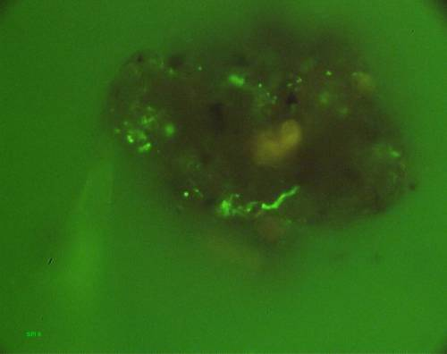
Schimmels in een bodemkluit
Bacteriën en schimmels in de grondVorm en functieIn de bodem komen vele soorten bacteriën voor met de meest uiteenlopende functies:-door omzetting van organische materialen komen voedingsstoffen vrij (vooral stikstof, fosfor en sporenelementen)-door slijmvorming wordt de bodemstructuur beïnvloed-de binding van stikstof door de wortelknolletjesbacteriën is een belangrijke stikstofbron
LandbouwkundigEr is een duidelijke tendens tot hogere bacterieactiviteit wanneer de grond minder zuur is (een hogere pH). Omdat bacteriën de neiging hebben organisch materiaal af te breken, kan dit tot humusafbraak leiden.Te sterk bekalken kan hierdoor een negatieve invloed op de grond hebben.
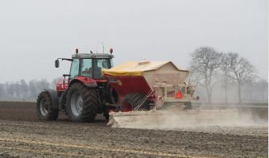
Door bekalken wordt vooral de activiteit van bacterien vergroot
Stikstofbindende bacteriënVorm en functieNet als bij een stikstofbindingsbedrijf maken de stikstofbindende bacteriën uit de vrije luchtstikstof eerst ammonium. Dit wordt dan weer tot aminozuren en eiwit omgezet. Hoe de stikstofbinding precies in zijn werk gaat is niet bekend maar het sporenelement molybdeen speelt hierbij een belangrijke rol. Van groot belang is dat de stikstofbindende bacteriën veel meer stikstof binden dan voor hun eigen groei nodig is. Het overschot is voor de plant beschikbaar.
De stikstofbindende bacteriën komen vrij in de grond voor. Wanneer er een vlinderbloemige wordt gezaaid gaan deze bacteriën door de wortelharen naar binnen, waarbij ze zeer lang worden vergeleken met hun normale staafvormige uiterlijk. De wortelcellen gaan zich na een infectie snel delen en zo ontstaan de wortelknolletjes. De vorm en grootte wisselt per plant. Na enige tijd verlaten de bacteriën de knolletjes weer en gaan de grond in. Knolletjes die stikstof binden hebben een roodachtige kleur. Deze kleur wordt veroorzaakt door een stof die nauw aan de rode bloedkleurstof verwant is.
Door de bacteriën kunnen aanzienlijke hoeveelheden stikstof worden gebonden:
-klaver of luzerne als hoofdgewas: ca 300 kg N per ha per jaar.-klaver onder tarwe gezaaid: ca 150 kg N per ha per jaar.-wikke voor 10 augustus gezaaid: ca 100 kg N per ha per jaar.
LandbouwkundigVan belang voor een goede stikstofbinding zijn:1. Zuurgraad. Op zure grond ontwikkelen de knolletjes zich slecht. Per vlinderbloemige ligt dit weer wat anders. Voor rode klaver is een hogere pH-waarde bijvoorbeeld belangrijker dan voor witte klaver. In het algemeen is een pH-KCl van 5,5 of hoger wenselijk.2. Organische mest. Toediening van stalmest verhoogt de stikstofbinding door vlinderbloemigen.3. Enten van bacteriën. In Nederland heeft enten in het algemeen geen zin. Er zijn vrijwel steeds voldoende bacteriën aanwezig. Bij luzerne op zandgrond is gebleken dat enten wel van belang is.4. Koolzuur. Koolzuur is van groot belang voor de stikstofbinding. Dit is mogelijk een reden dat stalmest de binding bevordert. Bij een lage pH-waarde is de stikstofbinding beter wanneer er maar voldoende koolzuur in de grond is.5. Stikstof. Wanneer het stikstofgehalte in de grond hoger is wordt er minder stikstof gebonden.6. Sporenelementen. Voldoende borium en molybdeen zijn belangrijk. Borium voor de groei van de wortelknolletjes en molybdeen voor de binding van stikstof.

Stikstofbindende bacterien bij erwt op het biologische bedrijf van Joost van Strien in Ens in de Noordoostpolder. De roze kleur geeft aan dat er actief stikstof gebonden wordt.
Vrij levende stikstofbindende bacteriënVorm en functieAzotobacter chroococcum is de belangrijkste stikstofbindende bacterie die vrij in de grond leeft. Hieronder een 1000 x vergrote afbeelding. Deze bacterie komt over de hele wereld in de grond voor. Een andere stikstofbindende vrij levende bacterie is Clostridium butyricum. Deze komt evenwel veel minder voor. De vrij levende stikstofbindende bacteriën hebben veel koolhydraten nodig om hun substantie op te bouwen, wel 5 keer zo veel als andere bacteriën. Voor deze omzetting en opbouw is veel lucht nodig. Veel lucht en veel koolhydraten zijn omstandigheden die niet veel voorkomen en de stikstofbinding door deze bacteriën stelt daarom niet zoveel voor. Voor de binding van 10 kg stikstof is ca 1000 kg koolhydraten nodig.
Wanneer er evenwel wat minder lucht in de grond aanwezig is, wordt de stikstofbinding efficiënter en het is niet uitgesloten dat er in bepaalde situaties toch aanzienlijk meer dan de gebruikelijke 5 kg stikstof per ha kan worden gebonden.
LandbouwkundigEen enigszins luchtige grond en een ruime beschikbaarheid van koolstofrijke oogstresten zijn een voorwaarde voor de stikstofbinding door vrij levende bacteriën.
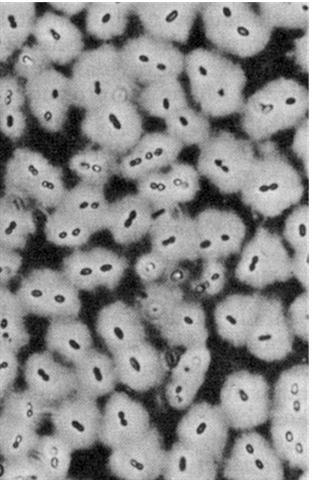
Azotobacter chroococcum
ActinomycetenVorm en functieActinomyceten zijn niet direct zichtbaar, maar toch kennen we ze wel. Ze zijn in belangrijke mate verantwoordelijk voor de typische geur van grond; de bosgrondgeur. Actinomyceten hebben veel gemeen met bacteriën. Ze onderscheiden zich ervan doordat ze als schimmels in strengen voorkomen. Het is wel zo dat ze alleen daar voorkomen waar voldoende lucht in de grond is. Als afweerstof tegen bacteriën produceren ze antibiotica (bijv. het geslacht Streptomyces produceert streptomycine en aureomycine). In de wortels van Elzen leeft Frankia. Een actinomyceet die vrije luchtstikstof bindt.
Actinomyceten breken plantenresten af en zijn ook in luchtige compost zeer actief
LandbouwkundigLuchtige omstandigheden stimuleren de actinomyceten.
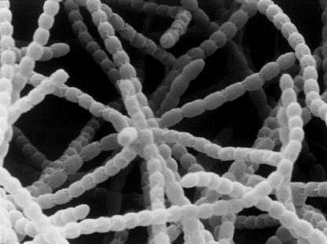
Actinomyceten hebben wat betreft vorm en functie het midden tussen bacterien en schimmels.
MycorrhizaVorm en functieVAM schimmels (Vesiculair Arbusculair Mycorrhiza) leven gedeeltelijk in de plantenwortel en gedeeltelijk in de bodem. De plant voorziet de schimmel van koolhydraten. De schimmel helpt de plant bij de opname van water en voedingsstoffen, maar vooral fosfor. Verder neemt de ziektewerendheid van de wortel toe. Het wortelstelsel wordt als het ware groter. Bij veel landbouwgewasen komen VAM schimmels voor, maar niet bij de kruisbloemigen (kool, mosterd, bladramenas) en bij de ganzevoetfamilie (boekweit, akkermelde). Omdat deze planten goed kunnen groeien zonder VAM, groeien deze het beste op opgespoten terreinen en pas aangelegde bermen en dijken. LandbouwkundigBij hogere gehaltes aan beschikbare stikstof en fosfor neemt de activiteit van de VAM schimmels af. Om deze reden speelt bij de intensieve teelten VAM waarschijnlijk geen grote rol. Bij lagere bemestingsniveaus in de akkerbouw ligt dit anders. Er zijn aanwijzingen dat mycorrhizaschimmels uienplanten weerbaarder maken tegen fusarium. Mycorrhizaschimmels spelen ook een belangrijke rol in het vastleggen van organische stof in de bodem. De schimmels maken glomaline aan. Door deze koolstofrijke glomaline ontstaan stabiele bodemaggregaten. Dit is dan ook gunstig voor de bodemstructuur. Mycorrhizaschimmels hebben het wat moeilijker in een landbouwsysteem waarbij diep geploegd wordt. Door diep te ploegen worden veel mycorrhizasporen (te) diep weggestopt. Daarnaast heeft een bemesting met veel minerale zouten en bijvoorbeeld bespuitingen met koper een sterk negatief effect op deze nuttige schimmels. Tips om de omstandigheden voor mycorrhizaschimmels zo gunstig mogelijk te maken:• Breng diversiteit aan in het bouwplan. Gebruik zoveel mogelijk waardplanten van mycorrhiza en vermijd niet-waardplanten.• Ploeg niet dieper dan nodig.• Introduceer mycorrhiza’s indien nodig. De vraag of het nodig is, is niet makkelijk te beantwoorden. Bij luzerne zijn gunstige effecten gevonden, bij de meeste andere gewassen worden zelden effecten gezien. De meest kansrijke manier om dit te doen is tegelijk met het inzaaien van een diverse groenbemester. Vermijd een bemesting net van te voren. Mycorrhizaschimmels zijn onder andere te koop bij Biomygreen (www.biomygreen.com) en Plant Health Cure (www.phc.eu). Biomygreen specialiseert zich speciaal op mycorrhizaschimmels en levert maatwerk door met analyses te volgen of de toepassing heeft gewerkt en stuurt desnoods bij.
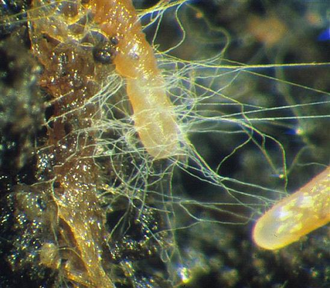
VAM schimmels zijn bij uien en granen goed te zien omdat de wortels er geel van worden.
Schimmels
Vorm en functieSchimmels zijn naast bacteriën de belangrijkste bodemorganismen wat betreft invloed op de bodemeigenschappen. Schimmels groeien in draden. Deze kunnen enkele centimeters tot enkele meters lang worden. Aan deze draden verschijnen conidia waar de sporen in gevormd worden. Bij de basidiomyceten (de paddestoelen) ontwikkelen deze conidia zich boven de grond. Vrijwel alle schimmels leven van dode planten. Er zijn enkele uitzonderingen. Pythium, Fusarium, Verticillium e.d groeien de plant in en vertragen de groei of doden de plant. Ook zijn er schimmels die de planten ingroeien en daarmee de groei stimuleren door het wortelstelsel als het ware uit te breiden: de mycorrhiza. Schimmels die aaltjes doden die in een lus kruipen, komen ook voor.
Planten bestaan vaak voor een belangrijk deel uit cellulose en lignine. Cellulose kan door veel organismen worden afgebroken. Lignine vrijwel alleen door een beperkt aantal schimmels. Uit deze lignine wordt de stabiele humus gevormd. Schimmels zijn belangrijk voor de humusopbouw.
LandbouwkundigWanneer de grond zuurder is worden schimmels gestimuleerd en daarmee de humusopbouw. Wanneer de grond meer basisch is worden bacteriën gestimuleerd en daarmee de humusafbraak en de vrijmaking van voedingsstoffen. Voor schimmels is een luchtige grond een voorwaarde voor een goede ontwikkeling. Dit in tegenstelling tot bacteriën. Veel soorten bacteriën kunnen ook bij minder of geen zuurstof leven.
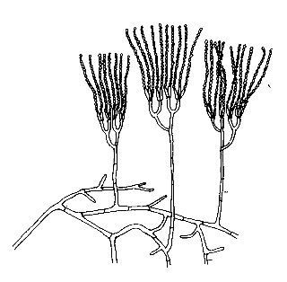
Bodemschimmel
ProtozoënVorm en functieProtozoën zijn eencellige organismen die zich vooral met bacteriën en schimmels voeden. Ze kunnen zich vrij bewegen mits er voldoende vocht in de grond is. Onder droge omstandigheden vormen ze cysten. Protozoën hebben twee belangrijke functies in de grond. enerzijds reguleren ze de ontwikkeling van bacteriën en schimmels en zorgen ervoor dat bepaalde groepen zich niet te extreem kunnen ontwikkelen. Anderzijds maken ze bij het verteren van bacteriën en schimmels voedingsstoffen vrij en spelen daardoor een belangrijke rol bij de plantenvoeding.
LandbouwkundigProtozoën hebben een vloeistof-film nodig om zich te kunnen bewegen. De grond moet dus vochtig zijn voor een goede groei. Bij het verteren van schimmels en bacteriën komen voedingsstoffen vrij, vooral stikstof en fosfor. Wanneer door regen of beregening een droge grond vochtig wordt, stimuleert dit de groei. Dit is niet alleen het gevolg van een toegenomen beschikbaarheid van vocht, maar ook van een toegenomen beschikbaarheid van voedingsstoffen waar protozoën een belangrijke rol bij spelen.
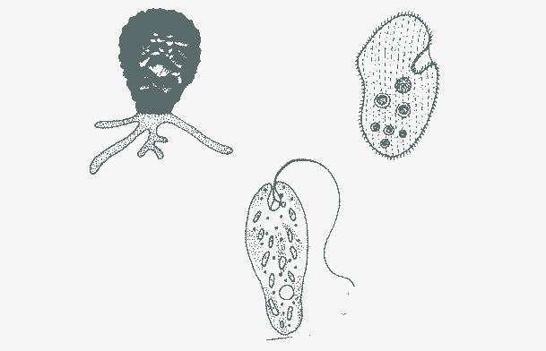
Protozoën
Aaltjes
Vorm en functieAaltjes zijn bekend om hun schadelijke effecten. Toch is het merendeel van de aaltjes in de grond onschuldig en leeft van plantenresten. Het is gebruikelijk dat er 10 tot 20 miljoen aaltjes per m2 voorkomen. Ze leven vooral bovenin de grond. Ze zijn meestal minder dan 1 mm lang. Van de bovenstaande afgebeelde aaltjes leeft de linker van dode planten en bacteriën. De middelste is een schadelijk aaltje dat sappen uit planten kan zuigen en daarmee virussen kan verspreiden. De rechter is een roofaaltje dat leeft van andere bodemorganismen.
LandbouwkundigEen divers bodemleven met veel verschillende soorten organismen, o.a. belagers van aaltjes, is van belang. Een constante toevoer van makkelijk omzetbaar organisch materiaal (mest, groenbemesters, oogstresten) is van belang.
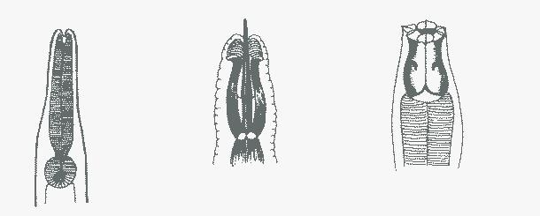
Aaltjes
Mijten
Vorm en functieMijten zijn in de bodem in grote aantallen aanwezig en zijn belangrijk voor de afbraak van organische materialen. Ze behoren tot de spinachtigen, net als spint die in de kasteelt voor problemen kan zorgen.
In de strooisellaag en in graslanden bereiken ze hun hoogste aantallen. Dode resten van planten en mest zijn voor veel soorten het belangrijkste voedsel, maar er zijn ook mijten die leven van schimmels, springstaarten, aaltjes en enchytraeen. Om deze reden zijn ze van groot belang voor het ecologisch evenwicht in de grond. Een aspect hiervan is ook dat mijten van belang zijn voor het transport van bacteriën en schimmels door de grond.
LandbouwkundigMijten zijn onder meer van belang vanwege de grote aantallen waarin ze voorkomen. Een strooisellaag (mulchlaag) is voor veel soorten van belang. Doordat een deel van de mijten roofmijten zijn, reguleren ze het bodemleven.
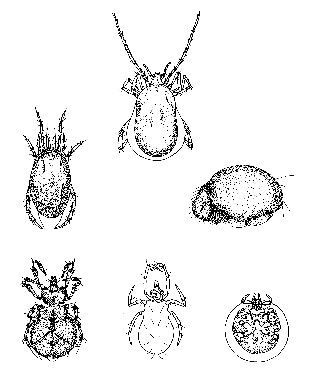
Diverse soorten mijten
Springstaarten
Vorm en functieNaast mijten zijn springstaarten ook een belangrijke groep die plantenresten en mest afbreekt. Ze komen in grote aantallen en in veel soorten voor. Het meest bekend is de springstaart die in bloempotten bij het watergeven opspringt.
We onderscheiden 3 groepen; in de figuur met a, b en c aangeduid.
a) De edaphische groep. Ze zijn behaard, hebben een grijze of bruine kleur, lange sprieten en onder het lijf een springorgaan dat ze in een holte onder het lijf kunnen steken en bij gevaar los kunnen laten springen waardoor ze zelf plotseling wegspringen. Deze groep leeft in bestaande gangen in de grond en eet plantenresten en mest. Bij afbraak komen koolzuur, water en mineralen vrij, onder meer stikstof en fosfor.
b) De hemiedafische groep. Deze zijn minder behaard, minder gekleurd en hebben kortere sprieten dan de edaphische.
c) De euedaphische groep. Haren ontbreken, ze zijn wit, hebben geen ogen meer en kunnen niet meer springen. Typisch is dat ze naast plantenresten en mest ook minerale delen tot zich nemen, dus klei en zand. In de darmen kunnen ze daardoor humus aan klei binden en zo stabiele humus vormen.
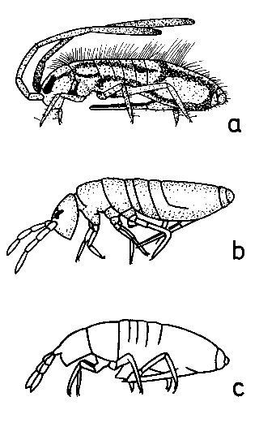
De drie groepen springstaarten
PotwormenVorm en functiePotwormen (Enchytraeen) zijn kleine witte wormen van 4 tot 40 mm lang. Ze kunnen in grote aantallen in grond, strooisellaag of compost voorkomen. Belangrijk zijn hun levensomstandigheden en hun invloed op de bodem.
Wat de levensomstandigheden betreft is het van belang dat ze bij een veel lagere pH-waarde kunnen leven dan regenwormen. De rol die regenwormen bij hogere pH-waarden spelen, wordt door de potwormen bij lagere pH-waarden ingenomen.
Het voedsel van potwormen bestaat uit weinig of licht voorverteerd voedsel. Het wordt in de mondholte opgenomen en daar enzymatisch voorverteerd. Een dergelijk soort voorvertering vinden we bij regenwormen niet; wel bij loopkevers en spinnen. Het opgeloste voedsel wordt nu opgezogen tezamen met micro-organismen en grond. In de uitwerpselen zijn de bodemdeeltjes en het verteerde voedsel aan elkaar gebonden. Op deze wijze wordt humus aan klei gebonden en de uitwerpselen van de potwormen hebben een veel grotere stabiliteit dan bodemdeeltjes die mechanisch verkleind zijn.
Wanneer de bodem niet te dicht is, kunnen de potwormen kleine gangen graven. In het algemeen worden evenwel bestaande gangen gebruikt.
Een interessante eigenschap is nog dat wortelcellen die door nematoden zijn aangetast, door potwormen bereikt kunnen worden. Hierbij wordt de nematode gedood en de wormen hebben op deze wijze een gezond makend effect op de plant.LandbouwkundigVanwege de mogelijkheid om in wat zuurdere grond te leven, vanwege de grotere aantallen en vanwege de gunstige invloed op humusopbouw en bodemstructuur, zijn potwormen van grote betekenis voor een vruchtbare bodem
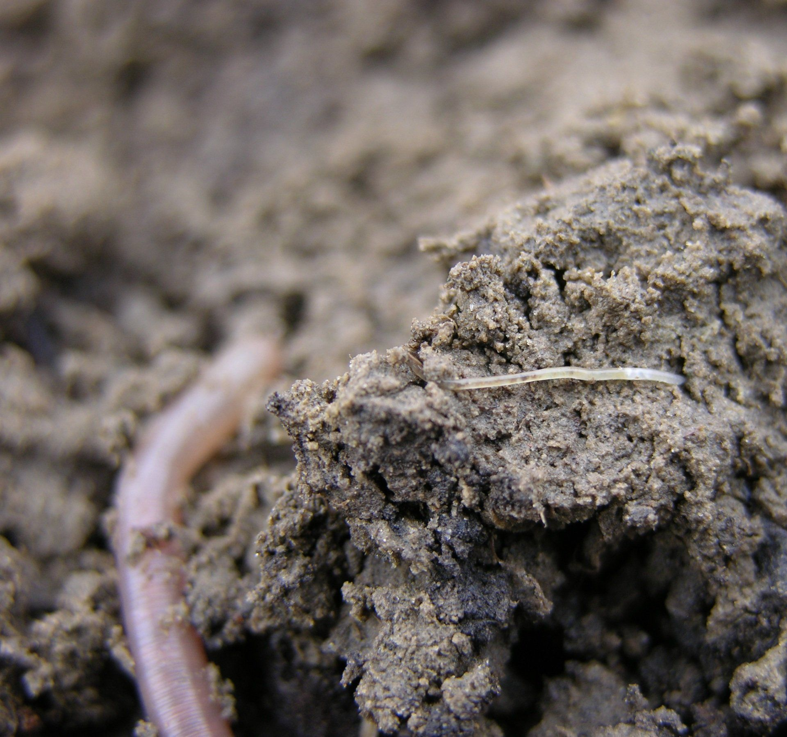
Potworm met op de achergrond een regenworm
RegenwormenVorm en functieDe groep van de regenwormen is een van de belangrijkste groepen dieren in de bodem. In voedselrijke graslanden bereiken de regenwormen de grootste dichtheden tot ca. 300-500 per m2 en hier worden ook de meeste soorten gevonden (Van Rhee, 1970).
De grootste soort (Lumbricus terrestris) kan wel 30 cm lang worden. Binnen de regenwormen kunnen drie groepen worden onderscheiden:
1) De voornamelijk rode wormen (epigeïsche wormen, Lumbricus rubellus Dendrobaena, Dendrodrilus, Satchellius) leven in de bouwvoor en de strooisellaag. Ze eten vers afgevallen plantmateriaal en mest aan de oppervlakte. De rode wormen gaan bij slechte omstandigheden (kou, droogte, voedselgebrek) snel dood, maar ze kunnen zich relatief snel vermenigvuldigen.
2) De voornamelijk grauwe wormen (endogeïsche regenwormen, Allolobophora, Aporrectodea, Eiseniella, Eisenia, Helodrilus en Octolasium) leven wat dieper, tot 40 cm diepte, en graven zich al etend door de aarde. De grauwe wormen kunnen bij ongunstige omstandigheden in een soort slaaptoestand overgaan in afwachting van betere tijden. De grauwe hebben dit ook wel nodig want ze vermenigvuldigen zich traag.
3) De in verticale gangen levende wormen (de anecische, Lumbricus terrestris is de bekendste) leven van plantenresten die op de grond liggen en die ze de gang in trekken.
LandbouwkundigIedere soort worm heeft weer een andere invloed op de grond. Deze invloed is bijna altijd een positieve. De rode wormen breken mest en plantenresten af en produceren daarbij voedingsstoffen, maar voorkomen ook ophoping van organisch materiaal zoals bij vervilting van de graszode. De grauwe eten zich door de grond heen en bevorderen zo de bodemstructuur, maar doordat ze zo humus aan klei binden en daarmee stabiele humus vormen, bevorderen ze de bodemvruchtbaarheid op lange termijn.
Wormen die verticale gangen maken, hebben weer een heel andere functie. Deze wormen leven hun hele leven in een enkele gang en dragen op deze wijze weinig bij aan een goede bodemstructuur. Wanneer er een verdichte laag onder de bouwvoor aanwezig is kunnen zij deze evenwel doorbreken. Enerzijds kunnen de wortels door deze poorten weer naar diepere lagen, anderzijds kan er zo ook lucht in de ondergrond komen en kan overtollig regenwater snel afgevoerd worden zonder daarbij veel voedingsstoffen mee te nemen.
Grondbewerkingen zijn vaak funest voor wormen. Het is niet zo dat een doodgefreesde of geploegde worm snel weer vervangen kan worden door een andere. Hoe oud ze precies in de grond kunnen worden, is niet bekend. Bij teelt in bakken worden leeftijden van 7 tot 8 jaar gevonden.
Wormen moeten worden gevoerd. Vers of kort verteerd materiaal is voer voor de rode; verder verteerd organisch materiaal voer voor de grauwe.
Enkele veel voorkomende regenwormen:
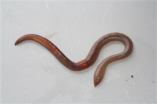
Lumbricus terrestris is de grootste in Nederland voorkomende regenworm. Leeft in verticale gangen. Bij uitstek de worm die verdichte ploegzolen losmaakt.
Grootte: 9 tot 30 cm lang
Kleur: bovenzijde rood, onderzijde lichter
Vorm: heeft een platte staart
Levenswijze: leeft in een verticale gang
Voedsel: strooisel dat aan de oppervlakte ligt
Leeftijd: 3 tot 6 jaar
Volwassen: in 350 dagen
Cocons: 38 per jaar per worm
Verspreiding: 3 tot 5 meter per kolonie per jaar
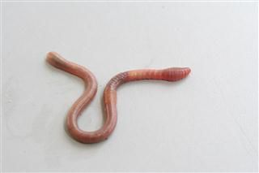
Aporectodea caliginosa is de meest voorkomende worm in Nederland. Hij leeft in de bovenste 40 cm. Doordat hij grond en plantenresten tegelijk eet, is hij een belangrijke structuurverbeteraar en vormer van stabiele, aan klei gebonden humus.
Grootte: 8 tot 14 cm lang
Kleur: variabel, grauw, soms wat blauw of roze.
Vorm: heeft een enigszins platte staart
Levenswijze: leeft in bovenste 40 cm; structuurvormer
Diapauze: gaat bij kou en droogte in een soort winterslaap en kan zo overleven; kan ook overstroming met water overleven
Voedsel: meest al wat voorverteerd voedsel
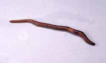
Lumbricus rubellus is een veel voorkomende donker gekleurde rode worm
Grootte: 6 tot 15 cm lang
Kleur: roodbruin tot roodviolet
Levenswijze: leeft veel in de strooisellaag, maar ook in de grond
Diapauze: op 45 cm diepte opgerold
Voedsel: vrij vers materiaal
Leeftijd: ca 3 jaar
Volwassen: in 180 dagen
Cocons: 80-110 per jaar per worm
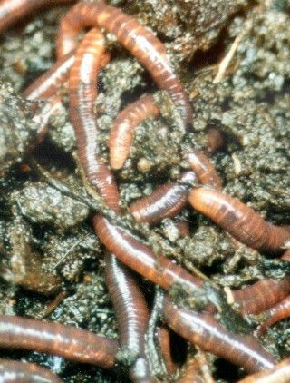
Eisenia foetida
Eisenia foetida is de typische mestworm. Hij kan in de grond wel overleven, maar vermenigvuldigt zich daar niet. De kleur is fel donkerrood. Op de hand zeer beweeglijk. Hij stelt hoge eisen aan levensomstandigheden (vocht, voedsel, temperatuur). Kan zich relatief zeer snel vermenigvuldigen.
Grootte: 3 tot 13 cm lang
Kleur: donkerrood tot purper; soms gelige strepen tussen de segmenten
Levenswijze: plantaardige compost, dierlijke mest, strooisellaag; bijna nooit in de grond
Voedsel: weinig verteerde planten en mest
Leeftijd: 1 tot 4 jaar
Volwassen: na ca 2 maanden
Eieren: 900 per worm per jaar
Amerikaanse wormen
De regenwormen van Noord-Amerika zijn van oorsprong voor een groot deel Nederlandse wormen. Ze worden daar evenwel niet altijd gewaardeerd. Hoe zit dat precies?
Na de laatste ijstijd waren er in Europa alleen nog regenwormen in het zuiden van Europa. Vanaf ca 10.000 jaar geleden zijn ze toch weer naar het Noorden gekropen. In Noord-Amerika liggende de gebergten Noord-Zuid, vormen geen buffer, zoals in Europa en de kou kon in de ijstijden verder naar het zuiden doordringen en weinig wormen bleven leven. Toen kwamen enkele eeuwen geleden de Nederlanders naar Noord-Amerika om tabak te halen. Op de heenweg werd er Nederlandse grond in de ruimen van de schepen voor stabiliteit meegenomen en in Noord-Amerika, inclusief wormen, achtergelaten. Die wormen zijn ondergronds op pad gegaan en veroveren nu geleidelijk het continent. In de landbouw zijn ze welkom maar in de bossen worden ze gevreesd. “Vieze allochtone wormen vernielen onze bossen.
Wat is er aan de hand? De bossen in het merengebied bij de grens van de VS en Canada hadden vaak een dikke laag met afgevallen bladeren. Deze “bladeren bleven liggen omdat er geen regenwormen waren die ze de grond introkken. Een grote groep dieren waren afhankelijk van deze laag. Toen de wormen de laag deden verdwijnen veranderde er heel veel. De bodem werd vruchtbaarder, maar wel met een dunne strooisellaag. Men trok massaal ten strijde, zelfs met bestrijdingsmiddelen, maar niets hielp. De veranderingen in de bodem door de aanwezigheid van regenwormen hebben ook invloed op de vegetatie. Diepwortelende gewassen zoals grassen krijgen meer kansen. De mycorrhizasystemen worden ook benadeeld en planten die zonder myccorrhiza groeien zoals koolsoorten nemen ook toe. Regenwormen eten alleen kleinere zaden. Dit is gunstig voor grofzadige planten.
MollenVorm en functieDe mol is een insectenetend zoogdier. Het dier leeft het grootste deel van het jaar alleen in een territorium van ongeveer 450 m2. Binnen dit gebied gaat zij dagelijks op zoek naar haar ‘portie vlees’ van 50 à 100 gram. Op zoek naar eten maakt zij gebruik van een ‘vast’ gangenstelsel van waaruit ze voortdurend in allerlei richtingen een groot aantal jachtgangen graaft. Al met al kunt u in zo’n territorium wel 100 tot 150 meter gangenstelsel tegenkomen. Door het minimale gezichtsvermogen van de mol leeft zij hoofdzakelijk onder de grond.
Alleen in geval van voedselschaarste en noodzakelijke verplaatsingen komen zij ‘s nachts boven de grond. De vrouwtjes werpen in mei 3 tot 4 jongen. Eenmaal uit het nest gekomen jagen ze in moeders gangenstelsel. Tot en met augustus leven ze hier om vervolgens door moeder mol te worden gedumpt. Op zoek naar een nieuw territorium blijken er weinig barrières te zijn, omdat een mol zelfs kan zwemmen. Tijdens het zoeken komen de jonge mollen vaker boven de grond dan normaal en valt een gedeelte ten prooi aan roofvogels, reigers, honden en katten. De overgebleven jonge molletjes kiezen vervolgens nieuwe voedselgebieden.
LandbouwkundigOp zich heeft de mol een positieve invloed op de bodemstructuur, dit ondanks het feit dat ze veel regenwormen opeet. De mol wordt een probleem wanneer ze jong zaai- of plantgoed vernielt of de oppervlakte van de grond uit ‘model’ brengt. Wat te doen indien de mol overlast veroorzaakt? In hoofdlijnen zijn er twee mogelijkheden. Verjagen of verplaatsen en bestrijden.
Verjagen kan door te kiezen uit een oplossing met behulp van geur of geluid. Zo worden uien- en knoflooksnippers, visafval, mottenballen (niet milieuvriendelijk), zwavelpatronen en keizerskronen ingezet om door de geur de dieren te verjagen. In de categorie ‘mol verjagen via geluid’ zijn lege flessen, pindakaaspotjes met spijkers en trilapparaten eventuele oplossingen. Het probleem van deze oplossingen is dat ze nogal wisselende resultaten geven.
Verplaatsen is ook een mogelijkheid. Al enige tijd zijn er vallen in de handel waar het dier levend in te vangen is. Na de vangst moet de mol binnen 2 uur bevrijd worden omdat ze anders het loodje kan leggen ten gevolge van stress.
Bij mechanische bestrijding kunt u met een schop aan de gang en de mol trachten in haar ritme van 3 uur te verrassen. Ook bestaan er klemmen. Zo bestaan er beugel-, staart- en draadklemmen. Bestrijden met klemmen is goed te doen wanneer u aan de volgende punten aandacht schenkt:
-Traceer de mollenactiviteit door gangen (ritten) dicht te trappen. Goed gebruikte mollenritten worden binnen 24 uur weer door de mol hersteld.-Plaats de klemmen in oppervlakkige ritten. Deze zijn te vinden langs borders, straatwerken en bebouwing. Kies bij voorkeur een recht stuk voor een vertakking.-Plaatsen van de klemmen: breek de rit open en verwijder de ingevallen delen, plaats de klemmen en span ze, dek de rit lichtdicht af met bijvoorbeeld een polletje gras.-Markeer de klemmen.-Voer dagelijks een controle uit en verplaats de klemmen indien na twee dagen de klem nog niet gesprongen is.
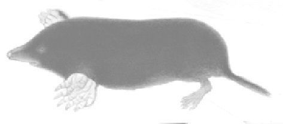
Mol
Literatuur
Brown, A.L., 1980, Ecology of soil organisms. Heinemann, London.Dekkers, D., 1994, VAM-schimmel en regenworm in fosfaathuishouding. Ekoland 3 1994, blz 20, 21.Felix, J. e.a., 1972, Thieme’s grote natuurgids, Thieme, Zutphen.Goede, R.G.M. de, Bodembiologie en het belang voor de landbouw, LBI, NMI, 2000.Ingham, E., Soilfoodweb inc USA .Kuntze, H. e.a.,1981, Bodemkunde, Ulmer, Stuttgart.Lechevalier, H.A. and D. Pramer, 1971, The microbes, Lippincott, PhiladelphiaLowenfels, J..en Schlegel, H.G., 1969, Allgemeine Mikrobiologie. Thieme Stuttgart.Topp, W., 1981, Biologie der Bodemorganismen. Quelle & Meywer, Heidelberg.Wold, A., 1993, Soils and the environment.University press, Cambridge.